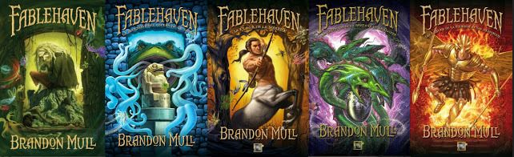
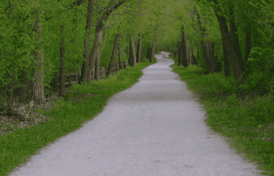

HOMEPAGE
Hello, my name is Alden DeHaan, and this is my first HTML project! I originally started my undergraduate career studying chemical engineering at Calvin University. However, my freshman year, the COVID pandemic began.
This caused classes to go online, and in the whole jumble of it all, I ended up not doing so great, and decided it was best to drop out for the forseeable future. Once the COVID pandemic mostly ended I restarted my studies at the College of Dupage. This time though, I started studying for my cybersecurity degree. I spent two years at the College of Dupage before getting my associates in cybersecurity and defense, and am now studying at IIT for a bachelors degree in applied cybersecurity.
Things I Enjoy
My favorite video game (I have over 1000 hours on it!) is Terraria.

My favorite book series is a young adult fantasy series called Fablehaven.
I love to go on long bike rides along the prairie path.
